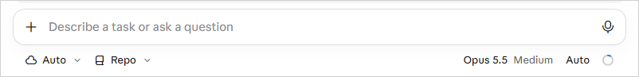
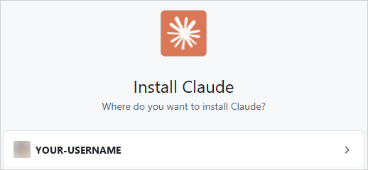
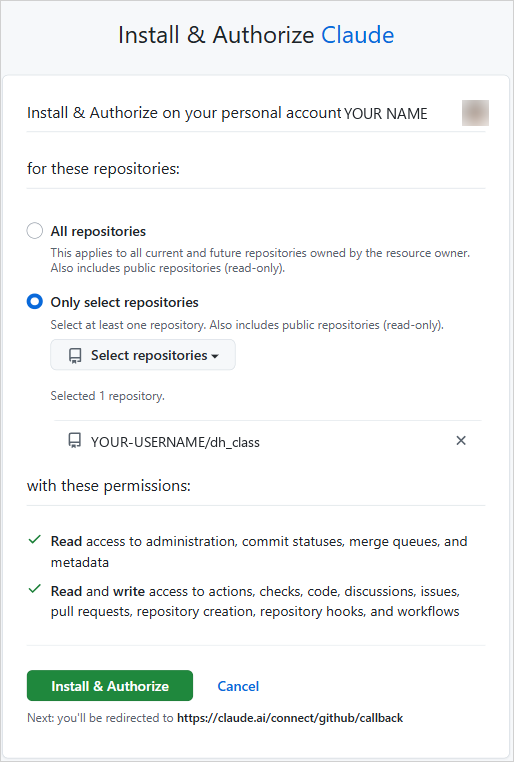
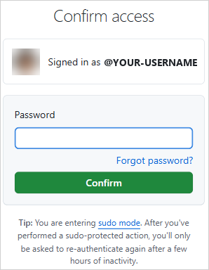
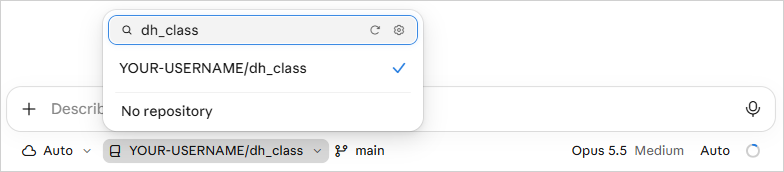
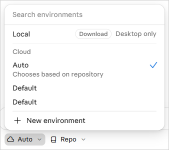
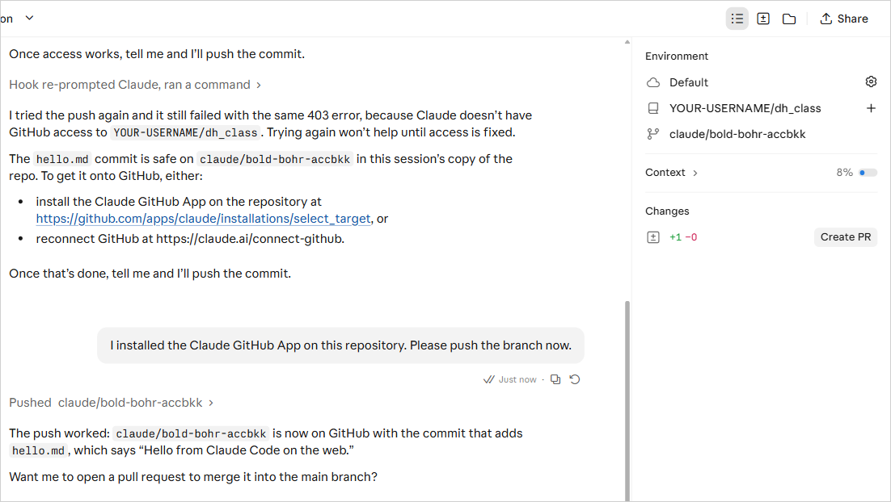
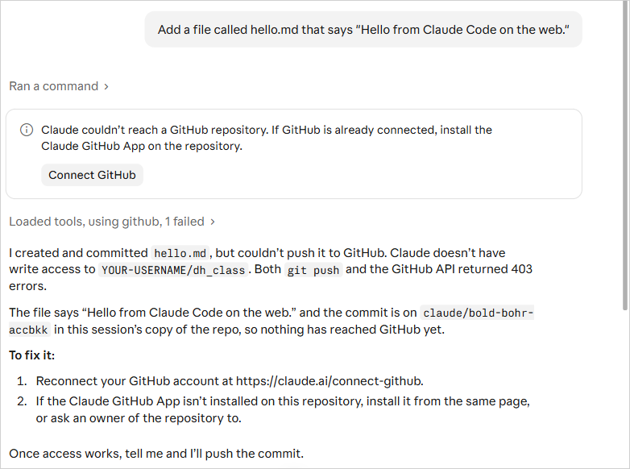

Student Guide: Connecting GitHub to Claude Code on the Web
The screenshots are provided for your reference. If your screen looks a little different, the site has probably been updated: look for the same button names.
Before you start
Claude Code on the web runs Claude Code in the cloud, on a GitHub repository, from any browser. Nothing is installed on your computer. You connect your GitHub account once, and Claude can then read your repository, make changes, and send them back to GitHub for you to review.
You need:
- Your own paid Claude account (Pro or above). This is the same account you use for Cowork.
- A GitHub account with at least one repository. If you don't have one yet, create one on github.com first: click + at the top right, then New repository. The screenshots use a repository named
dh_class, but yours can have any name. - A web browser. Chrome, Edge, Safari, or Firefox all work.
How it differs from the other two guides: Claude Code in the Terminal and Cowork work on files on your own computer. Claude Code on the web works on a copy of your GitHub repository in the cloud, so your changes only reach your computer after you sync with GitHub.
Step 1: Open Claude Code on the web
- In your browser, go to claude.ai/code.
- Sign in with your Claude account. Use the same Google login or email you use for Cowork.
If you see "Claude Code isn't available on your account," you are probably signed in to the wrong account or organization. Click Switch organization, or sign out and sign in with your own Pro account.

Step 2: Connect GitHub and install the Claude app
On GitHub, connecting your account and installing the Claude GitHub App happen on the same screen. You only do this once.
- On claude.ai/code, click Connect GitHub when Claude asks. If it doesn't ask, open the Repo menu and click Install the Claude GitHub App.
- GitHub opens and asks Where do you want to install Claude? Sign in to GitHub if it asks, then click your own username.

- On the Install & Authorize Claude page, choose Only select repositories.
- Click Select repositories, type the name of your repository, and click it in the list. It appears under "Selected 1 repository."
- Click the green Install & Authorize button.

- GitHub may ask you to Confirm access with your GitHub password. Type it and click Confirm.

- GitHub sends you back to Claude.
Why "Only select repositories": Claude can only see and change the repositories you pick. You can add more later (see the last section).
Step 3: Choose your repository and environment
Back on claude.ai/code, the controls sit just below the message box.
- Click Repo, type the name of your repository, and click it. It shows as YOUR-USERNAME/your-repository (
dh_classin the screenshot). The branch next to it showsmain; leave it.
- Leave the environment (the cloud icon on the left) set to Auto, which chooses a cloud setup based on your repository. Ignore Local, which only works in the Claude desktop app.
- Leave the permission mode (bottom right) set to Auto. Claude checks each action for risk and blocks the risky ones.

You do not need to create or change an environment for this class.
Step 4: Try a first task
- Type a small request in the message box, for example: Add a file called hello.md that says "Hello from Claude Code on the web."
- Press Enter. Claude copies your repository into the cloud and starts working. You can watch each step.
- When Claude finishes, it pushes its work to a new branch on GitHub (a name like
claude/bold-bohr-accbkk). Yourmainbranch is not touched. - The panel on the right shows Changes with counts like +1 −0. Click the counts to see exactly what changed.
- If you're happy with the change, click Create PR, or just tell Claude "yes, open a pull request."

- On GitHub, open the pull request and click Merge pull request, then Confirm merge. The change is now on
main.
To get the change onto your computer, open GitHub Desktop and click Fetch origin, then Pull origin.
You can close the browser tab while Claude works. The session keeps running, and you can come back to it from claude.ai/code.
Changing access later
- Add or remove repositories: on GitHub, open Settings → Applications → Installed GitHub Apps, click Configure next to Claude, and change the repository list.
- Disconnect GitHub from Claude: go to claude.ai/customize/connectors and disconnect GitHub.
Troubleshooting
| Problem | Fix |
|---|---|
| My repository isn't in the list | The Claude GitHub App isn't allowed to see it. Add the repository to the app (see above), then reload claude.ai/code. |
| I only see a GitHub login button | Step 2 didn't finish. Click the button and authorize Claude again. |
| "Claude Code isn't available on your account" | You're in the wrong account or organization. Click Switch organization or sign in with your own Pro account. |
| My changes aren't on my computer | Cloud changes go to GitHub first. Merge the pull request, then Pull origin in GitHub Desktop. |
| The session seems stuck | Check status.claude.com, then start a new session. |
If Claude says it couldn't push (a "403" error and a Connect GitHub button), the Claude GitHub App isn't installed on that repository. Your work is safe in the session. Add the repository to the app, then tell Claude "I installed the app, please push again."
